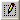

You can edit one or more of the fields of the SNMP managed objects (OIDs) that are already in the OID list.
(OIDs) that are already in the OID list.
Note: You need to Disable polling before you can edit listed OIDs.

button to display the Edit OID entry dialog.Tip: Double-clicking the row of the required OID also displays this dialog.
Tip: Since
it is ESSENTIAL to specify this address correctly, we recommend that you
copy this address from the relevant MIB
file and then use the button to paste it into this cell.
Note: This name does NOT have to be the textual description of the OID.
Tip: Use the
Browse tag  button
to add and/or select this tag. For details, see Selecting
a Tag Using the Agent Explorer.
button
to add and/or select this tag. For details, see Selecting
a Tag Using the Agent Explorer.
If necessary, modify the Rate, in milliseconds, at which this OID value should be polled (monitored) or specify 0 to use the default Poll rate of this agent, specified in the Poll settings section.
Note: This rate cannot be less than 5 seconds, the minimum for the Poll rate for this agent.
Note1: The and buttons can select the OID entries above and below in the list
Note2: If more than one OID entry is edited then these changes will ONLY be made once the OK button is clicked.